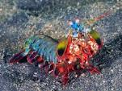

Fatos sobre o Stomatopoda
Odontodactylus scyllarus
| Reino | Animalia |
| Filo | Arthropoda |
| Subfilo | Crustacea |
| Classe | Malacostraca |
| Subclasse | Hoplocarida |
| Ordem | Stomatopoda |

Olhos super diferentes
Possuem olho composto, feito de milhares de pequenas unidades, cada uma detectando a luz de forma independente. Aqueles na faixa intermediária são especiais. São eles que deixam o animal ver as cores.
